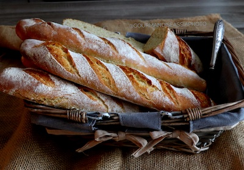

Découvrez la liste de nos produits et la provenance de nos matières premières.
La liste de nos produits mis en ventes:
- Baguette traditionnelle
- Viennoiseries
- Pain nordique
- Sandwichs le midi
- Pain au seigle
- Pain campagnard
- Pain aux céréales
- Pain boulot
- Pain batard

La provenance de nos matières premières
| Produits & Villes d'origine |
| Farine |
Strasbourg |
| Graines de lin |
Auchy-les-mines |
| Graines de sésame |
Nouvron-Vingré |
| Graines de pavot |
Beugneux |
| Beurre |
Montcucq |